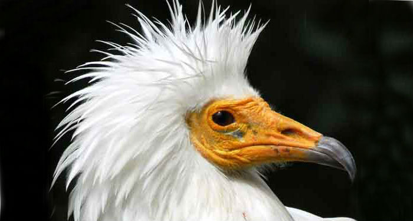
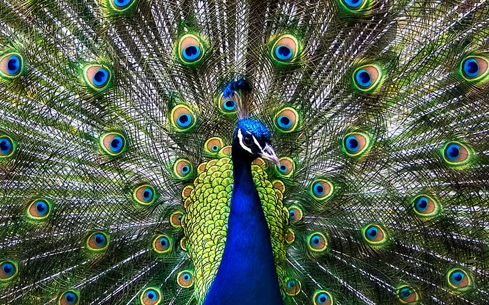

ANIMALES
| Reptiles | Mamiferos | Pájaros | Anfibios |
Pájaros
Las aves pertenecen al grupo de los vertebrados. Su principal característica es que pueden volar. Para ello disponen de un cuerpo aerodinámico, con las extremidades anteriores transformadas en dos alas de idéntica forma y medida. Como excepción, la avestruz, el emú, el kiwi y el pingüino son de las pocas especies de aves que no pueden volar.
Como elementos característicos, las aves tienen el cuerpo cubierto de plumas, respiran por pulmones y en lugar de dientes tienen pico. La reproducción de las aves es de tipo ovípara. Es decir que después de aparearse, ponen huevos y los dejan madurar hasta que nacen las crías.
Las aves son la clase más abundante del Planeta. En el mundo hay más de 9.000 diferentes.
|  | |
 |
| Alimoche | Buitre Común | Pavo Real |